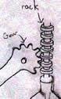
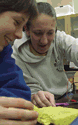

 |
Constructionism
The term "Constructionism" refers to two
kinds of construction: constructing ideas and constructing
personally-meaningful projects. Find out more about Constructionist
learning theory and practice. |
|
|
Hands-On
Inquiry Science
Science
museums provide opportunities for people of all ages
to learn through hands-on exploration of natural phenomena.
The Exploratorium's Institute for Inquiry offers a thoughtful
collection
of inquiry science resources.
|
|
|
Bridging
Physical and Virtual Worlds
PIE activities bridge the divide between digital
technologies and the physical world, allowing artful
exploration of the world beyond the computer screen.
Read background in the PIE
Network NSF grant proposal. Download an article
on "middle tech" (PDF) by Mike and Ann
Eisenberg.
|
|
|
Informal
Learning
PIE
activities generally take place in informal learning
environments. National Science Foundation provides a
description of informal learning.
The Institute for Learning Innovation has identified
11 key factors fundamental to Free
Choice Learning.
|
|

Our
Learning Philosophy in Action...
|
 |
Across
the PIE Network
How are we applying these learning theories? See examples
throughout this web site, including the Ideas
and Crickets and
Events sections. Also,
the Center for Children
and Technology is evaluating PIE Network activities
to learn more about supporting science and technology
education nationally. |
|

|
Stuff
Adults Want to Know
Karen Thimmesch, a mentor teacher at the Museum Magnet
School in St. Paul, worked with PIE staff from the Science
Museum of Minnesota to involve students in developing
playfully inventive projects that use technology. See
how she approached thinking about these projects on this
page called, "Stuff
Adults Want to Know." |
|
|

|
This material is based upon work supported by the
National Science Foundation
under grant number 0087813. Any opinions, findings,
and conclusions or recommendations expressed in
this material are those of the authors and do not
necessarily reflect the views of the National Science
Foundation. |
|